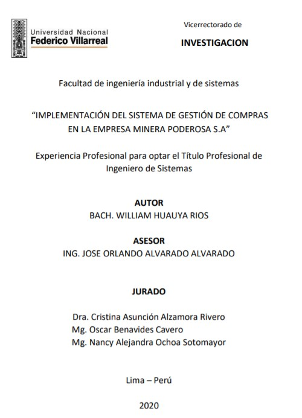

Implementación del sistema de gestión de compras en la Empresa Minera
Poderosa S.A
AUTOR: Bach. William Huauya Rios
 Descripcion:
Descripcion:
El presente documento se originó con el propósito de demostrar que al realizar el proceso de Implementación del sistema de gestión de compras en la Compañía Minera Poderosa S.A. mejora su proceso optimizándolo. Si bien cualquier implementación de algún sistema requiera dinero, tiempo, etc. al final de todo este proceso se mostrará la importancia de esto el cual conlleva Reducción de costos del proceso de compras y Optimización de dicho proceso. Esto se inicia con la revisión de la situación antes de la implementación la cual nos informa como está yendo su proceso, después de esto se comenzará a planificar y/o diseñar que tipo de sistema es el más adecuado para esta empresa trazándose el cronograma, la inversión asociada a dicha implementación, tipo de software a usar, y cómo crear un ambiente agradable y fácil de entender al usar dicho software ya que lo que se quiere es optimizar el proceso más no complicarlo.
Help desk en la gestión de incidencias de un gobierno local de la región
Lima
AUTOR: Mena Campos, Antonio
Descripcion:
La investigación titulada “ Help Desk en la Gestión de Incidencias de Un Gobierno Local de la Región Lima.”, tuvo como objetivo medir las diferencias que existen al implantarse un Help desk o Mesa de la mesa de ayuda para mejorar la gestión de incidencias de un gobierno local. Mediante un enfoque cuantitativo, desarrollado mediante el método deductivo, se desarrolló una investigación aplicada, de diseño experimental de alcance preexperimental, de corte longitudinal, mediante un instrumento de medición al personal de soporte de la gerencia de tecnologías de información, el cual fue validado mediante juicio de expertos, asimismo, se estableció la validación y su confiabilidad fue realizada por el procedimiento alfa de crombach encontrándose una alta confiabilidad para cantidad de incidencias (0.863) y para las reincidencias (0.834).
Metodología de los siete pasos para mejora de procesos en una empresa
avícola
AUTOR: Mauricio Laiza, Emiterio
Descripcion:
El presente trabajo de investigación está basado en la metodología de los 7 pasos para la mejora de la calidad y ha sido desarrollado con la finalidad de mejorar los procesos estratégicos que existen en la empresa avícola San Fernando S.A. Es por eso que se realizó un minucioso análisis interno de los procedimientos, los cuales se incorporaron con el concepto de misión, visión y los valores de la empresa, ha sido posible poder delimitar objetivos de largo plazo asimismo con las estrategias que posibiliten lograrlos. Se calcula que a mediados del año 2020 el sector avícola seguirá liderando la producción nacional de carnes, para distribuir diversos mercados nacionales, especialmente en la sierra, lugar en el que por ahora se da el menor consumo per cápita.
La inteligencia artificial y el gobierno electrónico en el instituto de
gobernabilidad y tecnología
AUTOR: Mugruza Torres, Roberto Guillermo
Descripcion:
En estos tiempos con el avance de las nuevas tecnologías de información y la inteligencia artificial podemos realizar experimentos con algoritmos en el desarrollo de software. También tenemos investigaciones dedicadas a diseñar y desarrollar algoritmos que sean capaces de resolver problemas heurísticos, en este caso el algoritmo genético. El objetivo de este proyecto es diseñar un software en lenguaje c# con algoritmo genético que genere una lista para el análisis de los proyectos de inversión pública en la plataforma de Gobierno Electrónico. En esta investigación presento conceptos fundamentales de la Inteligencia Artificial, un poco de historia, enfocándonos en los Algoritmos Genéticos y su capacidad para resolver problemas en los proyectos de Gobierno Electrónico.
Aplicación de buenas prácticas de gestión y modelo operativo en proyectos de
tecnologías de la información
AUTOR: Vidal Vidal, Carlos Enrique
Descripcion:
Un problema constante que encontramos en los proyectos en general y específicamente en los relacionados a tecnologías de la información es la inadecuada selección y uso de las herramientas de gestión recomendadas por el Project Management Institute (PMI) y que a lo largo del tiempo ha dado como resultado un alto porcentaje de proyectos que no han cumplido sus objetivos. En la presente monografía se realizó el desarrollo de un caso práctico y real donde se seleccionaron procesos de gestión de acuerdo a las necesidades de la empresa que ejecutó un proyecto de migración de una aplicación motivado por un cambio tecnológico y que, conjuntamente con el uso adecuado de un modelo operativo de desarrollo de aplicaciones, se pudo culminar con éxito el proyecto y trasladar estas buenas prácticas a otros proyectos obteniendo como resultado una disminución de costos por entregas no conformes y mayor satisfacción del cliente.
Implementación del sistema de gestión de seguridad de la información con
enfoque en la gestión de riesgos en las entidades públicas del Perú
AUTOR: Espinoza Huerta, Pamela Victoria
Descripcion:
Se definió como objetivo general: Lograr la implementación del sistema de gestión de seguridad de la información aplicando las normas internacionales ISO/lEC 27000, a fin de alcanzar la adecuada gestión de riesgos en la entidad pública del Perú. Precisando como objetivos específicos: (1) Diseñar un sistema informático que sirva como herramienta a la organización para la dirección de los procesos organizacionales en la implementación de un sistema de gestión de seguridad de la información y la gestión de riesgos, (2) Determinar la aplicación de la familia de normas internacionales ISO/lEC 27000 sirve como instrumento para la gestión de seguridad de la información y la gestión de riesgos, para el cumplimiento de los requerimientos legales.
Diseño del cuadro de mando integral como soporte al proceso de seguimiento y
control de las estrategias del servicio de propiedad vehicular
AUTOR: Aparicio Chávez, Oscar Midward
Descripcion:
Toda empresa debe hacer un análisis minucioso de su entorno externo para luego hacer un análisis de las capacidades internas con las que cuenta para lograr enfrentar al mundo con una adecuada posición estratégica, por este motivo las empresas llevan a cabo primero el análisis estratégico que le va a permitir elegir la estrategia correcta y luego los planes de acción para aplicar dicha estrategia. Los resultados obtenidos por la implantación de las estrategias dependen de sus activos físicos, financieros e intangibles; en ese sentido es evidente la importancia cada vez mayor que tienen los activos intangibles y la necesidad por parte de las empresas de buscar la forma de cómo medir su aporte a los beneficios y logro de los objetivos. En ese sentido el cuadro de mando integral es la herramienta gerencial que ayuda a los altos directivos a efectuar un apropiado seguimiento y control de la implantación de sus estrategias monitoreando que éstas se estén llevando a cabo de la manera más eficiente posible.